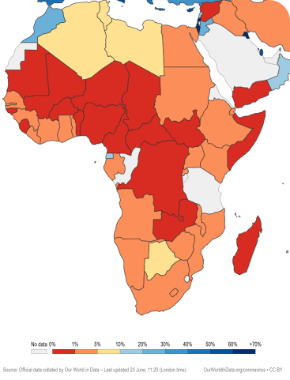
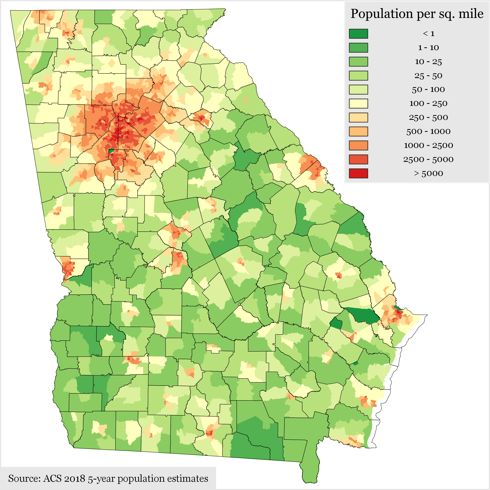
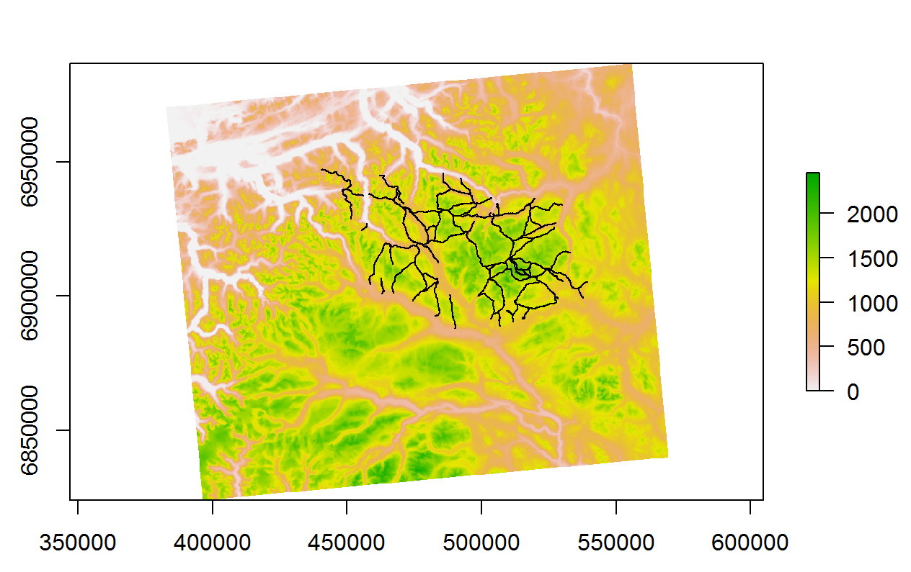
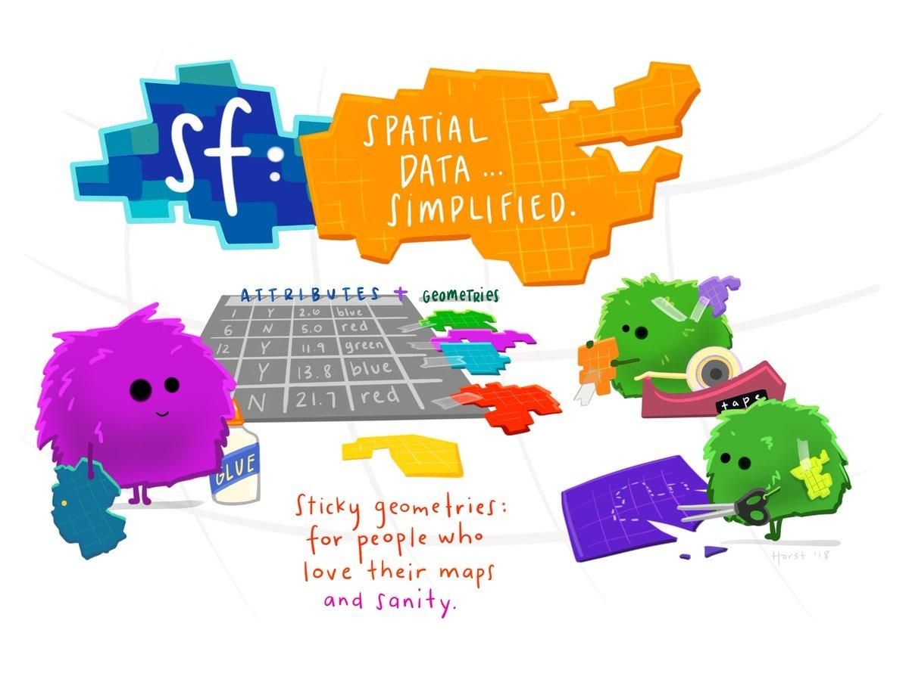
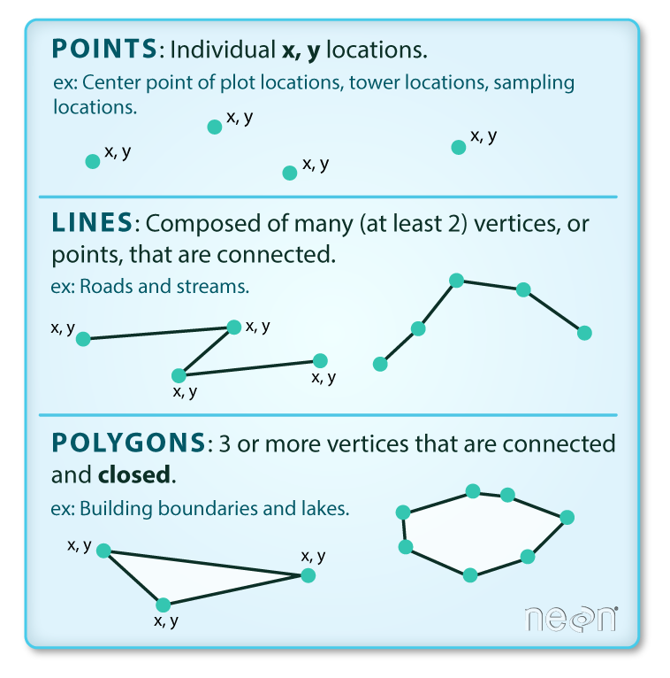
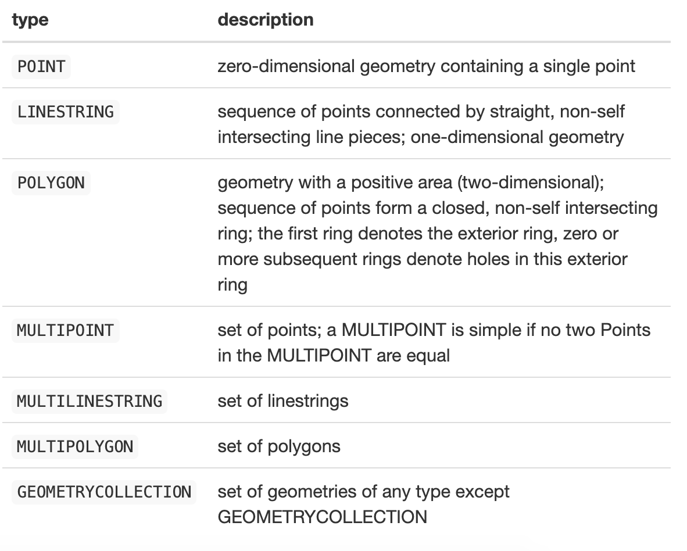

{kind=link}
# You may need to install.packages("sf")
library(sf)
library(tidyverse)
library(here)
library(janitor) # This is for cleaning the variable namesIntroduction to Geospatial Data in R with sf and Tidyverse
What is Geospatial Data
Spatial Analysis
Geospatial data is data about locations and features on Earth but we often refer to geospatial data simply as “spatial data”. These data can often have latitude and longitude attached to them. An example of spatial data would be using a bus app, and you can see the location of the bus.
Analysing this data is referred to as spatial analysis.
For example, you could have a map with data layered on top:

Map of share of people who received at least one dose of COVID-19 vaccine by country in Africa, 2021.svg” by Our World In Data is licensed under CC BY 4.0

“Georgia Population Density by Census Tract” by Wikimedia, used under CC BY-SA 4.0

Or in this example - Mountain trails in Dovrefjell National Park, Norway created by our colleague John Wilson.
Why is it Important?
Spatial analysis can be used in many disciplines to aid decision makers in their decision making process. Urban planners might use it as might logistics practitioners.
In the health context, vaccination strategies can be informed or the tracking of infectious diseases can be greatly improved.
One famous example is John Snow’s investigation into a cholera outbreak in London in 1854. Not convinced that the disease was transmitted by air but rather through the water system, he plotted points on a map to show that cholera deaths were clustered around water outlets.
Spatial data structures and the sf package

Spatial data are different to the usual datasets we have been working with. Spatial data are usually represented by “vector” data, rather than in the rows and columns that we are used to.
Wait, what’s vector data?
Vector data is data that represents features in the world as either points, lines or polygons.
Points: A single pair of coordinates. For example the x,y position of a tower location.
Lines: Two or more connected points. For example, the start and end of a pathway.
Polygons: Three or more points that are connected and closed. For example, the outline of a loch.

Shapefiles
The most common file format for vector data is a Shapefile which has the extension .shp. It stores the points, lines or polygons of the dataset. .shp files can store only one type: points, lines or polygons and comes with metadata which indicates which type it stores. Working with Shapefiles in R can be a bit more challenging than working with normal data frames and tibbles, but they allow you to have rich datasets with geographic content.
Further resources:
For more about vector data see Introduction to Vector Data (Data Carpentry)
Simple spatial features (sf)
sf stands for Simple Features, a standardized format for representing spatial vector data. It follows a formal standard that defines how spatial geometries—such as points, lines, and polygons—are stored and accessed.
But what exactly is a feature? You can think of a feature as an object. In the real world, objects can be anything: a building, a tree, or a satellite. While we refer to them as single ‘objects’, they actually consist of various components. For instance, a tree is made up of a trunk, branches, and leaves. A feature follows the same concept: it may represent a single entity but can consist of multiple parts, along with attributes that describe it.
“Simple Features (officially Simple Feature Access) is a set of standards that specify a common storage and access model of geographic features made of mostly two-dimensional geometries (point, line, polygon, multi-point, multi-line, etc.) used by geographic databases and geographic information systems. It is formalized by both the Open Geospatial Consortium (OGC) and the International Organization for Standardization (ISO).” - Wikipedia
The following seven simple feature types are the most common:

In the sf package, spatial objects are stored as a simple data frame with a special column that holds the geometry coordinates. This special column is a list, with each element corresponding to a row in the data frame. The length of each list element varies, depending on how many coordinates are needed to represent each individual feature. To work with sf objects in R, we use the sf package.
New Zealand Census Example
Let’s look at an example. Download and unzip the file below into a “data” folder and create an RProject and a new RMarkdown file (new_zealand_census.Rmd). This data is aggregated census data from New Zealand from 2013.
Or you can download the completed example complete-new-zealand-census2013.zip
You’ll notice there are 4 files. This is the format of Esri Shapefiles. (Esri is a geographic science and geospatial analytics company).
.shp: The main file that contains the feature geometry
.shx: The index file that stores the index of the feature geometry
.dbf: The dBASE table that stores the attribute information of features
.prj: A text file that contains information about a coordinate system and map projection
The .shp file is our spatial data and is already an sf object (the other files are part of the specification and are used to make reading the data more efficient).This means we can read the file in using the st_read() function to read it into our code. All of the functions in the sf package that operate on spatial data start with “st_”. This stands for spatial and temporal.
Let’s load the data and have a look.
# Read in data about New Zealand using the st_read function
nz_census2013 <- st_read(here("data" ,"nz_census2013.shp"))
# We'll use clean_names from janitor package to quickly clean up messy column names.
# It changes them all to lowercase and adds "_" for spaces
nz_census2013 <- nz_census2013 %>%
clean_names()Click on the nz_census2013 object. Here we can see:
simple features object (sf): a single observation.
simple feature geometry list-column (sfc) : this is the geometry column.
simple feature geometry (sfg) : this is the values within the geometry column. We can see the type is MULTIPOLYGON.

When you inspect the data, you’ll see that the geometries are placed in a list-column. Each element of this list holds the simple feature geometry for a particular feature, as geometries are not single-valued.
# check class and look at the data
class(nz_census2013)When we check the class of the nz_census2013 object we can see that it is both a data.frame and an sf object.
We can access the geometry aspect of your spatial data by calling the st_geometry function:
nz_geometry <- st_geometry(nz_census2013)
nz_geometryWe can see that the geometry column is a list of polygons made up of points.

Plotting the data
For visualisation, the sf package extends the base plot command, so it can be used on sf objects. If used without any arguments it will plot all the attributes.
# If you want to plot all variables, you can do the following:
plot(nz_census2013)
# Or we could plot only the area variable of the sf object.
# Because it's an sf object we can't use the $ operator to get the results we want (e.g. nz_census2013$area).
# Instead, we use the square bracket notation.
plot(nz_census2013["area"])
This is great but often we’ll want to use ggplot because it gives us more control over our plots.
Plotting spatial data with ggplot
Luckily, there is a function built into ggplot called geom_sf. Let’s try it.
# plot the data using ggplot
ggplot(data = nz_census2013, aes(fill = pop)) +
geom_sf() +
scale_fill_continuous(labels = scales::label_comma())
Much better! Here are a few more examples:
ggplot(data = nz_census2013, aes(fill = income)) +
# colour and linewidth refer to the outline of the map
geom_sf(colour = "white", linewidth = 0.1) +
scale_fill_viridis_c(name = "Income in $") +
theme_void() +
labs(title = "Average Income by Region 2013")
Let’s say we wanted to display a map illustrating the average region percentage of each island who are Maori:
# Group by island and summarise to get mean of maori per region
nz_census_summary_by_island <- nz_census2013 %>%
group_by(island) %>%
summarise(average_percent_maori = mean(maori))
# Extract the North Island's average percentage Maori for the subtitle
# We use pull() to get just the values from a specific column, rather than returning a tibble
north_island_percent <- nz_census_summary_by_island %>%
filter(island == "North") %>%
pull(average_percent_maori)
# Extract the South Island's average percentage Maori for the subtitle
south_island_percent <- nz_census_summary_by_island %>%
filter(island == "South") %>%
pull(average_percent_maori)
nz_census_summary_by_island %>%
ggplot(aes(fill = average_percent_maori)) +
geom_sf(colour = "black", linewidth = 0.5) +
scale_fill_viridis_c(
name = "Percent",
labels = function(x) x * 100
) +
theme_void() +
labs(
title ="Average Region Percentage of Population Maori 2013",
subtitle = paste0("North Island: ", round(north_island_percent * 100, 1), ", South Island: ", round(south_island_percent * 100, 1))
) 
Thinking point: Why there are only two colours on the map?
Key Takeaways
Spatial data is represented by “vector” data, including points, lines, and polygons.
Points: Single coordinates (e.g., a tower location).
Lines: Connected points (e.g., pathways).
Polygons: Closed shapes formed by points (e.g., boundaries of a loch).
Shapefiles are a common file format for vector data, storing geographical features (points, lines, polygons).
Shapefiles include multiple files (.shp, .shx, .dbf, .prj) that contain feature geometry and attribute information.
The sf package in R is used to work with spatial vector data.
Spatial data is stored in a data frame with a special geometry column, and functions for spatial operations start with “st_”.
The st_read() function is used to read shapefiles into R as sf objects.
Visualization: Plot sf data using ggplot2 with geom_sf() for better customization.